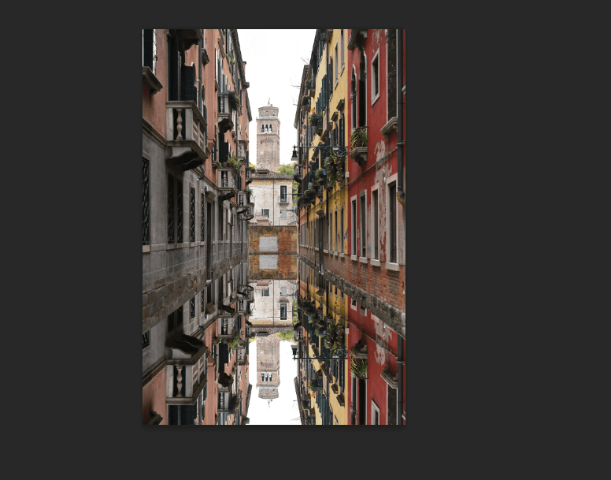
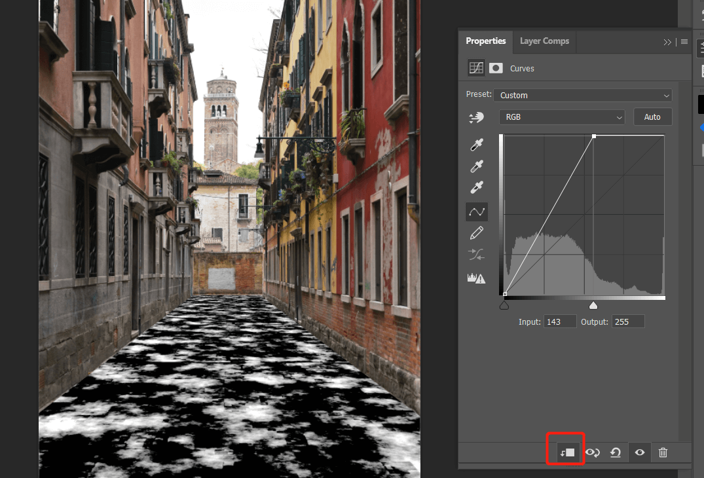
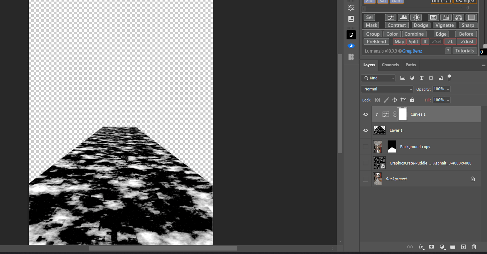
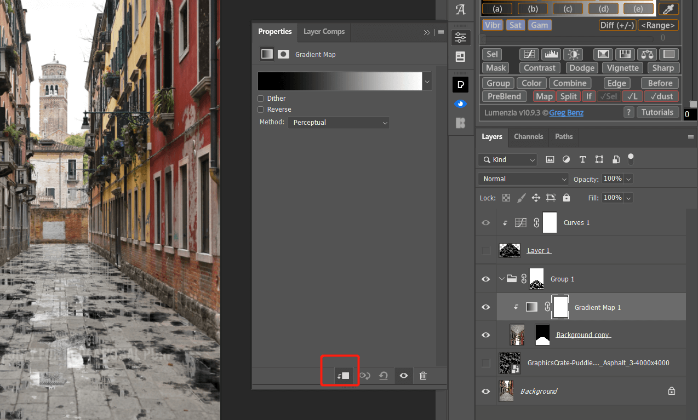
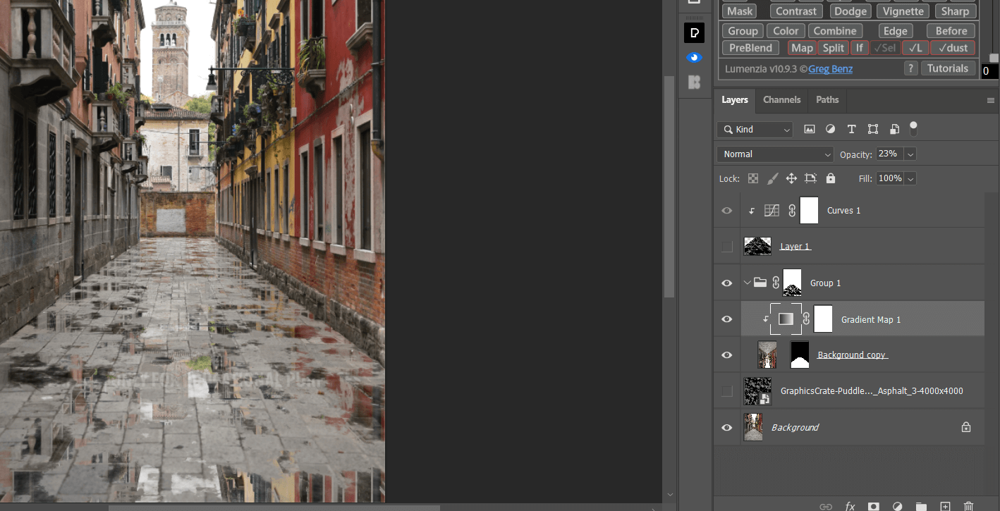
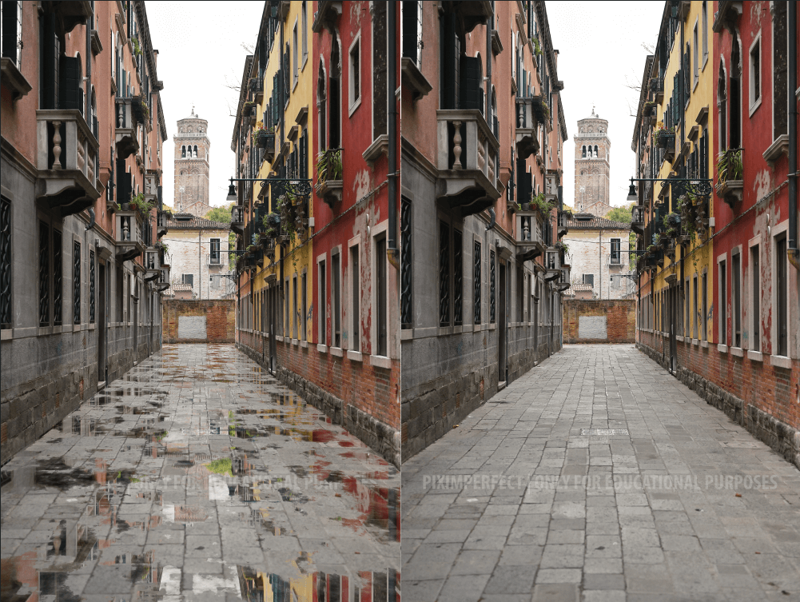

制作水坑效果 in Photoshop

今天介绍给晴朗路面添加雨天水坑效果，实际效果还不错。
用到的技术：vanishing point，channel，puddle texture材质。
原图如下：
首先我们创建路面部分的立体平面，选择 filter - vanishing point：
点击 create plant tool：
根据路面形状，通过点击绘制出一个大致的梯形，注意如果轨迹不符合路面形状会显示为红色：
拖拽线段扩展到整个路面：
以上就完成了平面的构建，点击确认返回。
首先复制背景图层。
然后我们通过钢笔工具或者其他工具建立地面的选区：
给复制的图层建立图层蒙版：
然后解锁蒙版和图层的锁，否则后面颠倒图层蒙版也会动：
然后选中图层而不是蒙版，点击 edit - transform - flip vertical：
调整图层位置到合适：

然后临时关闭路面倒影的图层，我们制作水坑的效果。
首先需要一个水坑素材图片，如下图：
导入 ps 后选中材质图层，按住 ctrl 点击图层全选材质图层，点击 ctrl c 复制图层，然后就可以关闭材质图层了：
新建一个空白图层，再次打开 vanishing point，按 ctrl v 复制材质图层到界面：
首先按ctrl T适当缩小图像，然后拖拽图层到下方创建的平面内：
按住 ctrl 拖拽图层，复制多个图层铺满整个路面：
完成后点击确认返回 ps，会将填充的平面内容在新图层上：
我们需要利用涂层的黑白部分反差作为模拟水滩效果，所以首先提高图层反差，新建曲线图层并设置只影响材质图层，提高亮部：

然后临时关闭其他图层，只保留材质图层：

进入通道，选择一个通道按住 ctrl 点击通道获取选区：
然后关闭材质图层，打开背景图层和路面反转图层，并将反转图层单独建立一个组：
选中组，点击创建蒙版：
这样我们就有了基本效果啦。
下面微调效果，首先倒影是在路面上形成的，所以他的颜色分布也应该符合路面的色彩分布，所以我们在反转组内建立一个 gradient map 图层并锁定之影响下方图层：

修改 map 颜色，亮部选区一个路面上较量区域的色彩，同样的暗部选取一个路面较暗的区域色彩，注意选择 3×3 拾取颜色：
根据情况调节 gradient map 不透明度：

水坑里的倒影一般会有一定的模糊，我们先将倒影图层转换为 smart object 然后选 filter - blur galley - path blur：
根据情况可以适当加强一下饱和度，新建 vibrate 图层，调节饱和度：
最终效果对比：

标签：无
电影中下雨是消防车。你可以随意更改现场